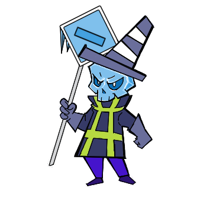

Projeto Digital · 2D
Ruas e Runas

Ruas e Runas é um roguelike urbano de tiro em 2D com geração procedural de mapas e inimigos, garantindo uma partida única a cada rodada. Movimentação e mira precisas são vitais para chegar longe. Atuei como programador e game designer no projeto.
Sobre o projeto
Ruas e Runas apresenta uma mecânica de roguelike: mapas e inimigos são gerados aleatoriamente, colocando o jogador em uma partida única a cada rodada. A mescla entre tiro preciso e movimentação ágil define o ritmo e o desafio da experiência.
Destaques
- Geração procedural de mapas e inimigos
- Combate de tiro 2D baseado em movimentação e mira
- Partidas únicas com alta replayability